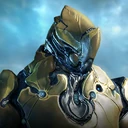
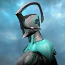

Selecione um Personagem
- 
-

- 
Rhino
O Rhino é um Warframe fortemente blindado com a força e a fortitude, imprudente e impetuoso. O Rhino troca velocidade por potência e foi projetado para desempenhar a função de tanque, com a capacidade de entrar na briga, atrair o fogo inimigo e dominar o campo de batalha à sua vontade por meio de pura força bruta.